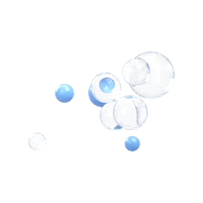
AQUENT mendaur ulang air bekas mandi lewat filtrasi 6 lapis dari material alami, sterilisasi UV-C, dan 4 sensor kualitas air real-time — lengkap dengan asisten AI Dermatology untuk kulit yang lebih sehat.
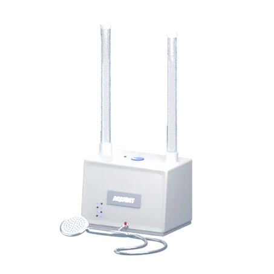
AQUENT dipasang di atas dinding kamar mandi. Air bekas mandi tidak dibuang, tetapi dibersihkan dan kembali ke shower.
Air bekas mandi masuk saluran lantai, lalu dipompa naik ke AQUENT.
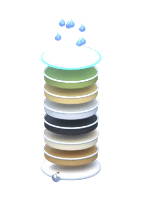
Daun bambu, loofah, zeolit, biochar kulit pisang, kitosan, ampas tebu.
Sinar UV-C 254 nm menonaktifkan bakteri dan virus yang tersisa.
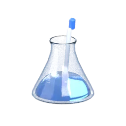
pH, kekeruhan, sisa klorin (ORP), dan suhu diperiksa real-time.
Lolos uji → dipakai ulang. Gagal → dibuang. Heater terintegrasi menyiapkan air hangat.
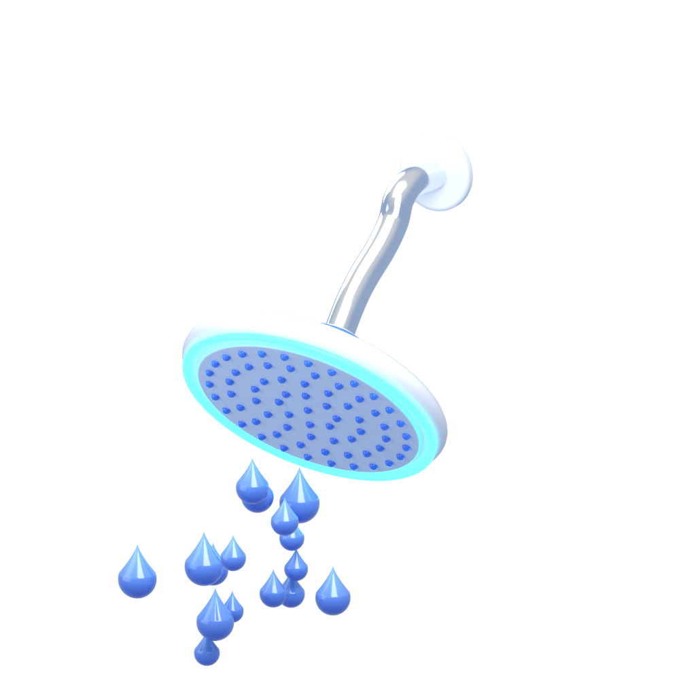
Air bersih dan air hangat bertemu di mixer — siap untuk mandi berikutnya.
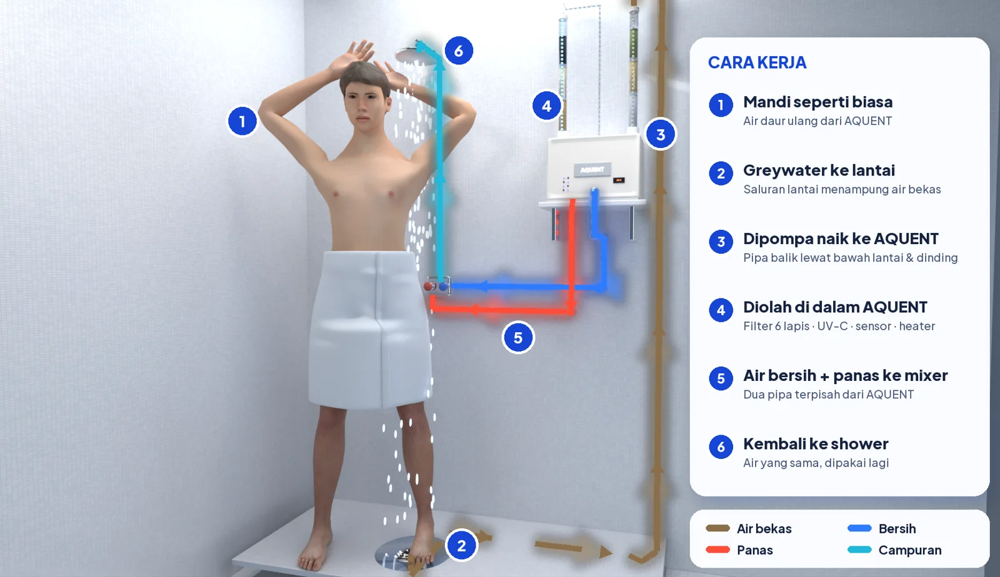
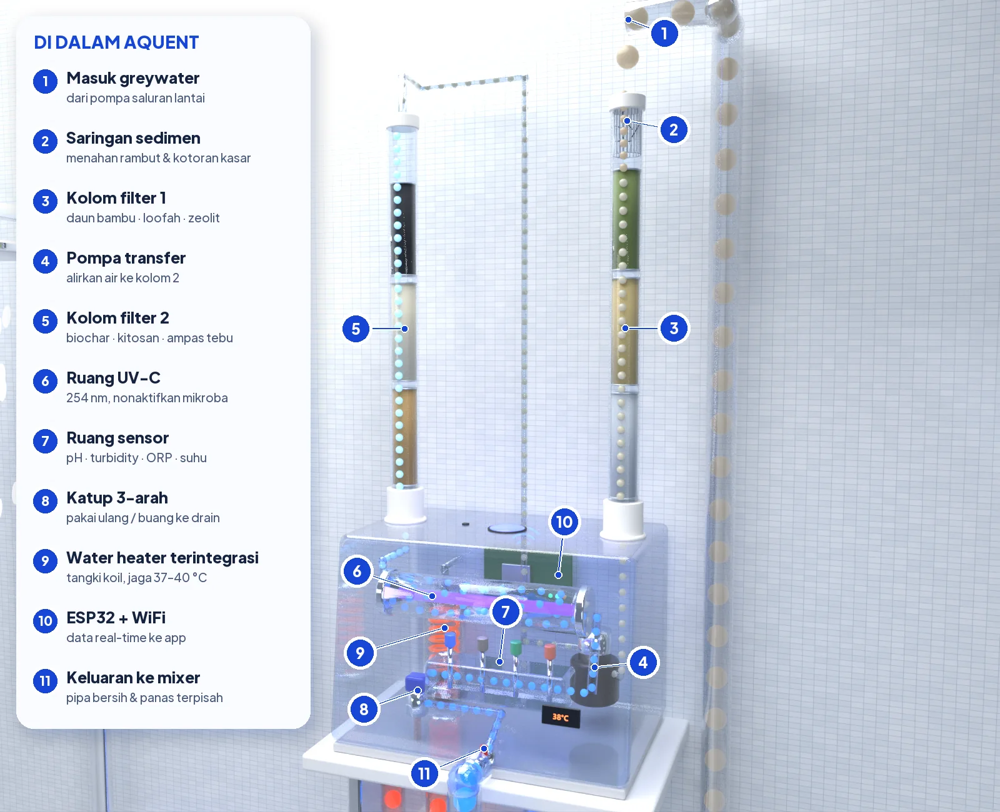
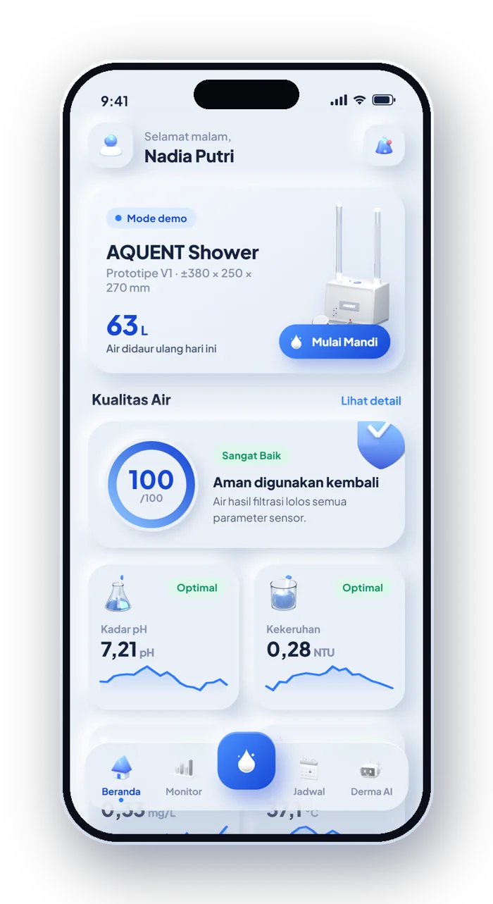
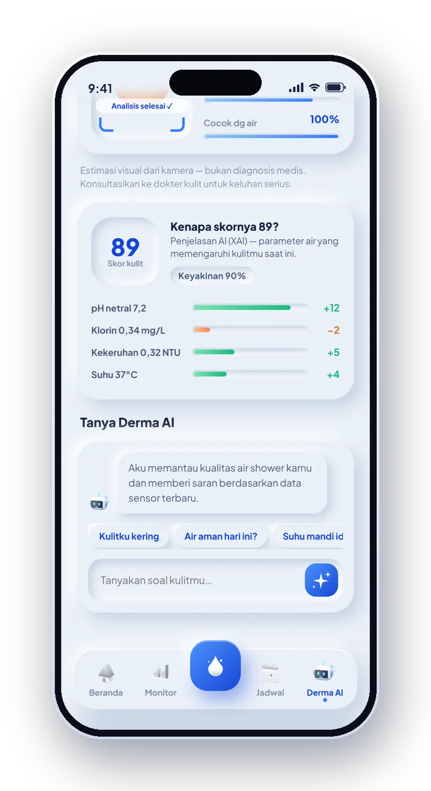
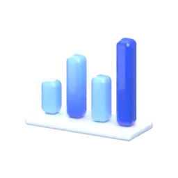
Skor kualitas air, empat sensor, dan status filter diperbarui setiap 2 detik.
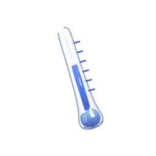
Atur suhu, pilih air suhu ruang atau hangat, dan pantau air yang dipakai vs. didaur ulang.
Tropis 2–3× sehari dengan air suhu ruang; subtropis 1–2× sehari menyesuaikan musim.
Scan kulit, analisis kelembapan dan sensitivitas, lalu saran mandi yang cocok dengan kualitas air.
Pengolahan langsung di titik pemakaian, tanpa tangki terpisah. Shower hemat air hingga 20–50%, dan AQUENT memakai ulang air yang biasanya terbuang.